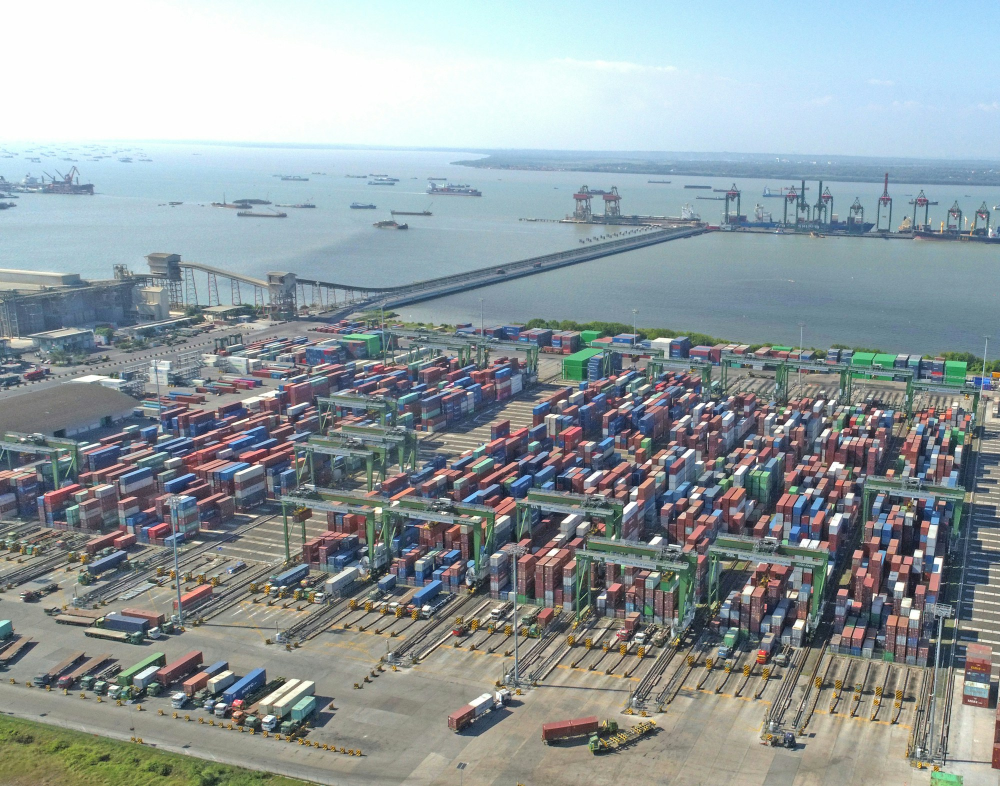
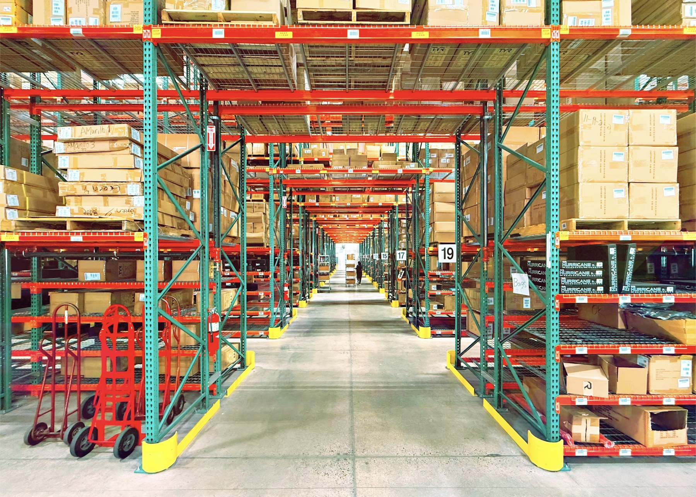
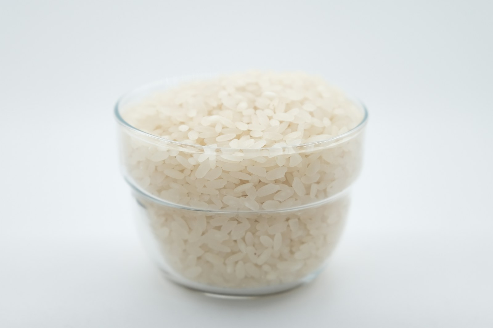
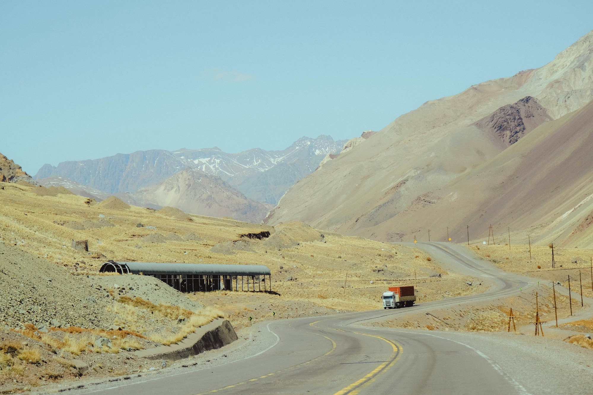

01
Wheat flour
Reliable sourcing and distribution for commercial and institutional buyers.
- Origin
- Regional & international
- Supply format
- 25–50 kg / bulk
- Trade terms
- FCA · CPT · DAP
Belal Kabul Bakhtar
BKB connects markets across Afghanistan and the wider region through commodity trading, financial services, distribution and cross-border commerce.

Operating network
BKB operates across the industries that keep markets moving—from essential food commodities and international trade to financial services, cash distribution and industrial products.
Four focused divisions. One established operating group.

Cross-border commerce
Disciplined procurement and dependable distribution of essential food commodities for commercial and institutional buyers.
Reliable sourcing and distribution for commercial and institutional buyers.
Regional procurement across established agricultural corridors.

Bulk and wholesale supply in adaptable formats.
International sourcing for consistent commercial supply.
Afghanistan has always stood at the meeting point of trading cultures. BKB carries that commercial position forward—linking suppliers, buyers and operating partners across established regional corridors.
BKB Financial Services
Supporting the practical flow of business through currency exchange, commercial settlement, regional payment support and cash distribution.
Explore financial services →Reference values are hardcoded for this visual demonstration and do not constitute an offer to transact.
Core business divisions
Trade categories
Regional markets
Years of commercial experience
Illustrative demonstration figures—structured for straightforward replacement with verified company data.

Moving essential goods across borders depends on disciplined sourcing, clear communication and supplier and distribution networks built for continuity.
Work with BKB ↗For sourcing, distribution, commodity supply, financial services or strategic partnerships, speak with the BKB commercial team.
Typical response within two business days